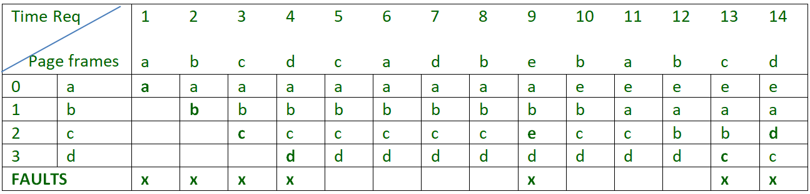

Let say the page reference string 7 0 1 2 0 3 0 4 2 3 0 3 2 . Initially we have 4 page slots empty.
Initially all slots are empty, so when 7 0 1 2 are allocated to the empty slots —> 4 Page faults
0 is already their so —> 0 Page fault.
when 3 came it will take the place of 7 because it is least recently used —>1 Page fault
0 is already in memory so —> 0 Page fault.
4 will takes place of 1 —> 1 Page Fault
Now for the further page reference string —> 0 Page fault because they are already available in the memory.
Example-2, Let’s have a reference string: a, b, c, d, c, a, d, b, e, b, a, b, c, d and the size of the frame be 4.

There are 7 page faults using LRU algorithm.